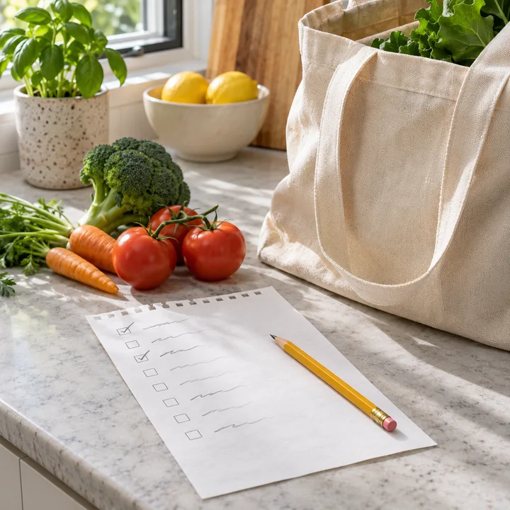

EatMeFirstの買い物リストの使い方
使い切った品、買い足し候補、手入力した品を一つのリストで管理する方法です。

色で三つの種類を見分ける
エヴァです。赤は使い切って買い直すパックです。緑はまだあるものの、今準備している買い物の次まで足りなくなりそうな品です。残量を見て買うか決めます。灰色は自分で追加したものです。在庫に登録したことのない品も書けます。
買い足し候補が出るまで
緑の候補には、少なくとも2か月分の登録と消費の記録が必要です。在庫がどれくらい持つか、次の買い物がいつ頃かを記録から見積もります。生活の予定も踏まえて判断しましょう。
紙のメモと同じように書く
「いつものジャムを2瓶」「リモコン用の電池」のように入力して追加します。数量や銘柄も同じ欄に書けます。
かごに入れたらチェックする
チェックした項目は暗くなって取り消し線が付き、下に移ります。間違えたらチェックを外して元に戻せます。買い物リストのチェックと在庫の登録は別です。帰宅したら登録画面で実際に買った数量と期限を入力します。
候補の扱いは自分で決める
旅行前で冷蔵庫を空にしたいなら、緑の品は見送れます。チェックして後回しにするか、×で削除します。その後で使い切ったと記録すれば、品切れとして再び出ます。
出かける前にスマホで確認する
いつもスマホで入力するならリストはそこにあります。PCで作ったときは、買い物前に最新の在庫ファイルをスマホへ移します。端末同士は自動で同期しません。次はマックスとバックアップを見てみましょう。
買い物リストに戻るタイミング
買い直す設定のパックを使い切って取り出しを確定するとき、確認画面でリストに追加されるか確認できます。移動した分が残っている場合は在庫を見てください。期限が過ぎただけではリストに入りません。週に一度買い物をし、卵を1日2個使う家庭で残り4個なら、今準備している買い物の次まで足りないと見込んで緑で表示されることがあります。残量は端数も含めて表示されます。
赤・緑・灰色の使い分け
使い切ったと記録した品は赤で表示されます。緑は、次の買い物までに足りなくなるかもしれない品です。目安を出すには、少なくとも2か月分の購入と消費の記録が必要です。灰色は自分で追加した品です。「いつものジャムを2瓶」「リモコン用の電池」のように、数量や希望も一緒に書けます。
お店ではチェック、帰宅したら登録
かごに入れたらチェックします。品名に線が引かれ、項目は下に移ります。間違えたらチェックを外せます。買った品の数量や期限は帰宅後に商品登録で入力します。候補は×で消せます。その後に使い切ったと記録すれば、品切れとして再表示されます。